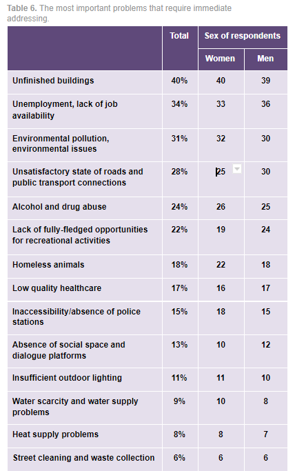

Сторінки із «Книги ревізії листів», де згадується привілей Владислава ІІ Ягайла від 1431 р. // Archiwum Glowne Akt Dawnych. – Tzw.ML – IV B. – Sygn.17. – s.200 -200 v.
Карта інтерактивна. Наведіть мишею на виділений текст, щоб підсвітити на карті елементи, про які розповідається. Клікайте на обʼєкти на карті, щоб подивитись коротку довідку. Жовтими точками відмічені втрачені будівлі.
Мирноград - місто, що розташоване в самому серці індустріального Донбасу. Основу майбутнього міста склали два шахтарські села - Новоекономічне та Гродівське, що утворилися навколо вугільних шахт і тривалий час розвивалися окремо
З 20 вересня 1911 р. Землі Новоєкономічного сільського об’єднання були передані в оренду строком на 30 років акціонерам Донецько-Грушевського акціонерного товариства кам’яних копалень, які розробили шахти № 1, 2, 3, 4, що призвело до створення одного з найбільших центрів видобутку вугілля на Донбасі - шахти «Новоекономічний». Щоденний видобуток склав близько 160 тонн вугілля
У 1945 році село Новий Донбас було перейменовано на село Димитров. 6 березня 1972 року села Димитров та Новоекономічне Червоноармійської міської ради були об’єднані в єдине адміністративне утворення - місто Димитров обласного підпорядкування (Постанова Президії Верховної Ради СРСР від 6 березня 1972 року № 422 ). 2 серпня 1990 року Димитрову надано статус міста обласного підпорядкування.
12 травня 2016 р. У рамках Закону України «Про засудження комуністичних та націонал-соціалістичних (нацистських) тоталітарних режимів в Україні та заборону пропаганди їх символів» місто Димитров було перейменовано на Мирноград Постановою Верховна Рада України "Про перейменування окремих місцевостей"
Зараз населення (за даними на 2020 рік) становить 47 460 осіб
Населення міста повільно зменшується (-0,77% зміни населення)
53% населення міста – жінки, а 47% – чоловіки
27% населення міста становить 60+ років
Найнижчий відсоток населення у віковій групі 20-24 роки (4% населення)
Місто має розвинені транспортні зв'язки. Упродовж південної межі міста проходить залізнична магістраль Ясинувата—Чаплине із зупинним пунктом у місті Мирнограді. Усі вантажні перевезення здійснюються через станції Покровськ та Гродівка, розташовані відповідно у 16 та 12 км від міста Мирнограда. Центральною частиною міста проходить автодорога державного значення Покровськ—Костянтинівка, якою здійснюється зв'язок із Донецьком та іншими містами України.
Зв'язки з населеним пунктом також забезпечує мережа автодоріг місцевого значення ( wiki data)
Тут показати шари problems_human_security, problems_human_security_polygons, security_objects (безпечні для громадян об'єкти)
Які проблеми для громади є найбільшими за значущістю?